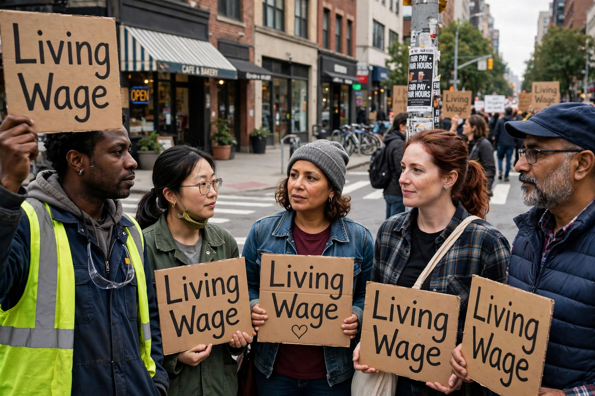

| Living wage | |
 | |
| Definition | Income sufficient for a worker and family to afford a basic but decent standard of living |
|---|---|
| Contrasted with | Minimum wage |
A living wage is the income level at which an individual or family can afford adequate shelter, food and other basic necessities — the means for a worker to meet the basic needs of a household and live with dignity. The goal is for an income from full-time work to lift workers out of poverty even if it exceeds the statutory minimum wage, which in many jurisdictions has fallen below that level.
The idea has roots in ancient and medieval thought on the just wage. It entered modern policy through Pope Leo XIII's encyclical Rerum novarum (1891), which held that wages must be enough "to support a frugal and well-behaved wage-earner," and through the work of economists and campaigners in Britain, the United States and New Zealand in the 1890s–1900s. In the United States, the living wage movement expanded from the 1990s with municipal ordinances — beginning with Baltimore in 1994 — requiring city contractors to pay above the minimum wage.
Living wage rates are typically calculated from a basket of goods and services for a model household and updated for inflation. In the United Kingdom, the voluntary "real Living Wage" accredited by the Living Wage Foundation is calculated by the Resolution Foundation from the cost of a minimum acceptable standard of living; the UK government's separate statutory "National Living Wage" (introduced 2016) is a higher minimum-wage rate for older workers rather than a needs-based calculation. Massachusetts Institute of Technology's Living Wage Calculator performs an analogous calculation for US counties.
Supporters argue a living wage reduces in-work poverty, turnover and public benefit costs. Critics, including some employers' groups, argue that mandating it raises labour costs and may reduce employment or hours; empirical studies of minimum-wage increases generally find modest employment effects, though results vary by context.